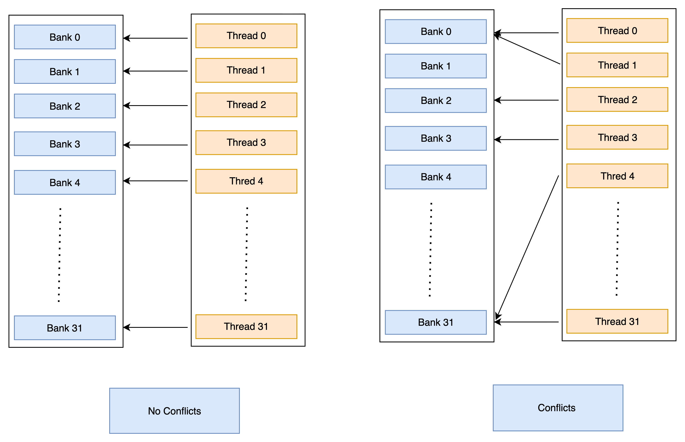
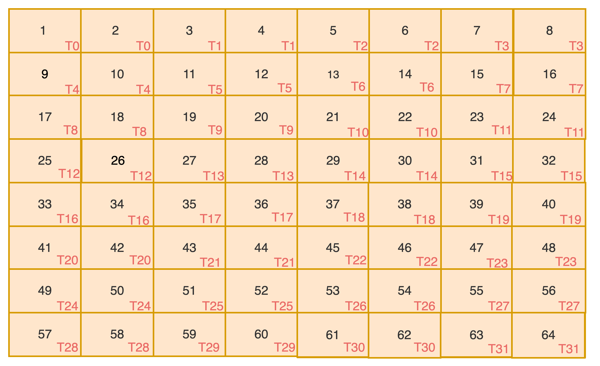
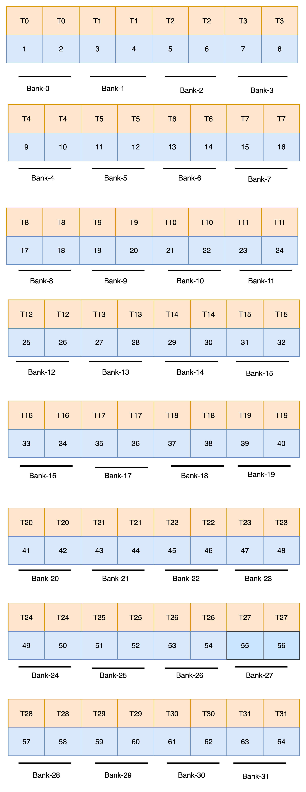

GPU Programming & GEMM Optimization · 4 min read
Bank Conflicts (Shared Memory)
On this page
Introduction to GPU Processing (High Level Overview)
GPUs have become increasingly popular for machine learning and HPC workloads due to their superior throughput capabilities. While CPUs utilize fewer, more complex cores optimized for sequential processing and low latency, GPUs employ hundreds or thousands of simpler cores designed for parallel processing. This fundamental architectural difference of many simple cores versus few complex cores - enables GPUs to excel at data-parallel workloads where the same operation must be performed across large datasets simultaneously."
A single GPU consists of multiple Streaming Multiprocessors (SMs), each containing numerous cores. The types of cores vary by GPU architecture: pre-Volta architectures featured only CUDA cores, while later architectures (Volta, Ampere, Hopper, and Blackwell) introduced Tensor cores specifically optimized for matrix multiplication operations common in AI workloads.
CUDA programming utilizes both thread and memory hierarchies to efficiently utilize these computing resources. The thread hierarchy organizes execution into a three-level structure: grids contain thread blocks, which in turn contain Warps and threads, A Warp is group of Threads. To support computation, the memory hierarchy provides data access through multiple levels: registers (fastest, per-thread), shared memory (per-block), L1/L2 caches, and global memory (largest, accessible by all threads).
Kernel Execution
To perform computations on the GPU, developers write functions called kernels in CUDA terminology. When launching a kernel, developers specify the grid dimensions (number of thread blocks) and block dimensions (number of threads per block). During kernel execution, threads typically load data from global memory into shared memory to improve performance. This strategy reduces the frequency of global memory accesses, which have higher latency and lower bandwidth compared to shared memory. Once data resides in shared memory, individual threads can efficiently load values into their private registers for computation.
During the process of moving data from Shared Memory to Registers , Thread needs to access this Shared Memory using Banks in Architectures like Ampere each Warp has access to 32 Banks , a warp comprises of 32 threads hence each thread can access only one bank , each bank has capacity of storing 32 bits = 4 Bytes.
Warps and Registers
As mentioned earlier, each warp consists of 32 threads, and each thread block may contain multiple warps. For example, a thread block with 64 threads results in 2 warps. Each thread block has its own shared memory space that all warps within the block can access.
In architectures like Ampere, shared memory is organized into 32 banks. Bank conflicts occur when multiple threads within the same warp attempt to access the same bank simultaneously, forcing these accesses to be serialized and reducing memory bandwidth. To maintain optimal performance, we must design access patterns that minimize bank conflicts, a small notes these conflicts can occur between the threads of same warp trying to access same bank but this conflict does not occur when threads from different warp access the same bank of shared memory.
Example Scenarios for Matrix Loading:
Scenario-1:- Loading 88 matrix with Precision of Floating Point -16 Bits (Half Precision) from Shared Memory to Warp Registers Scenario-2:- Loading 168 matrix with Precision of Floating Point-16 Bits(Half Precision) from Shared Memory to Warp Registers Scenario-3:- Loading 16*16 matrix with Precision of Floating Point-16 Bits(Half Precision) from Shared Memory to Warp Registers

Scenario-1
- 8*8 = 64 Numbers
- Half Precision = 2 Bytes
- 64 * 2 Bytes = 128 Bytes
- Warp = 32 Threads
- Load 128 Bytes from Shared Memory to Registers using 32 Threads
- 128 Bytes / 32 Threads = 4 Bytes / 1 Thread
- Each Thread loads 2 Numbers - 4 Bytes
- Each Bank can only serve 4 Bytes per cycle
- This scenario does not lead to conflict, each thread access only one bank


Scenario-2
- 16*8 = 128 Numbers
- Half Precision = 2 Bytes
- 128 * 2 Bytes = 256 Bytes
- Warp = 32 Threads
- Load 256 Bytes from Shared Memory to Registers using 32 Threads(Registers)
- 256 Bytes/ 32 Threads = 8 Bytes
- Each Thread need to load 4 Numbers = 8 Bytes / 2 Bytes
- Each Bank can only serve 4 Bytes per cycle
- Each Thread access 2 Banks
- Thread-0 => Thread-15 access 0-31 Banks
- Thread-16 => Thread-31 access 0-31 Banks
- This Leads to 2 Way conflicts , hence the loading should be done in 2 Cycles (Sequentially)
Scenario-3
- 16*16 = 256 Numbers
- Half Precision = 2 Bytes
- 256 * 2 Bytes= 512 Bytes
- Warp = 32 Threads
- Load 512 Bytes from Shared Memory to Registers with 32 Threads
- 512 Bytes/ 32 Threads = 16 Bytes
- Each Thread needs to Load 8 Numbers = 16 Bytes / 2 Bytes
- Each Thread access 4 Banks (4 Bytes per Bank, 4 Banks for 16 Bytes)
- Thread-0 => Thread-8 access 0-32 Banks
- Thread-9 => Thread-17 access 0-32 Banks
- Thread-18 => Thread-25 access 0-32 Banks
- Thread-26 => Thread31 access 0-32 Banks
- This leads to 4 Way conflicts , hence the loading should be done in 4 Cycles (Sequentially)
https://medium.com/@fatlip/cuda-shared-memory-23cd1a0d4e39 https://medium.com/distributed-knowledge/cuda-memory-management-use-cases-f9d340f7c704